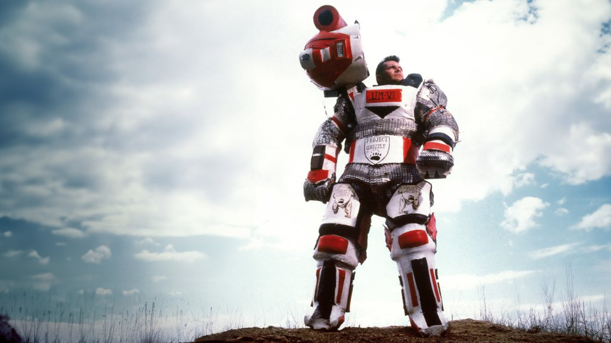

My Four Favourite Documentaries
American Movie
-
Tickled
-
The Act of Killing
-
Project Grizzly
Project Grizzly

I really enjoyed this doc for a lot of the same reasons as American movie. Like Mark, the main character Troy is also driven by a single goal and won't let anything stop him. I love his personality and his kind of quirky swagger.